Requirements
Setting up the Character Rig
- Open Unity Project with Starter Assets
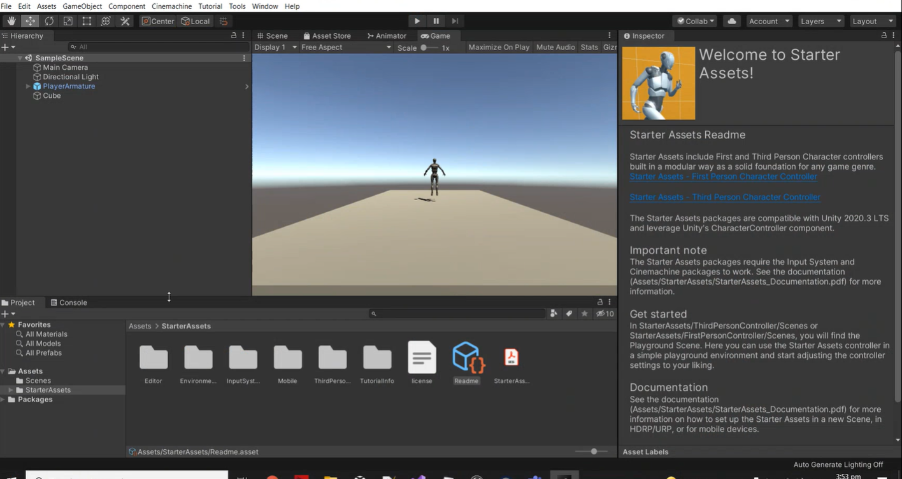
- For this example, we will use the Unity Robot Character Prefab
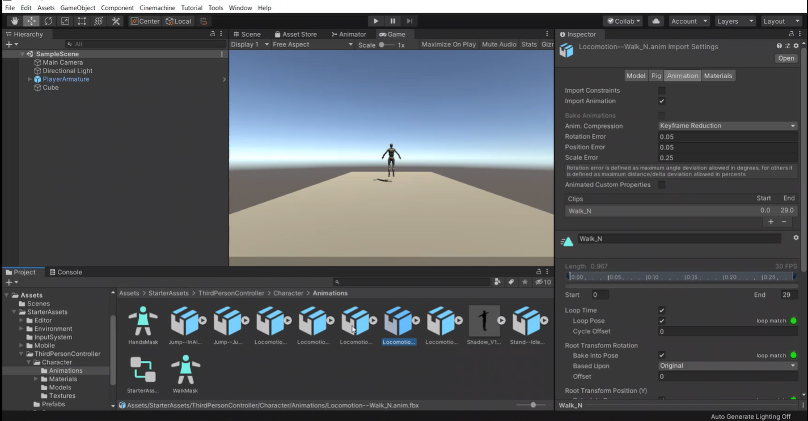
- The Full Body FBX from Hand Engine comes in rigged as Generic and has to be rigged as Humanoid. Apply these changes and then press the Configure button
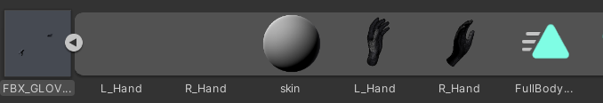
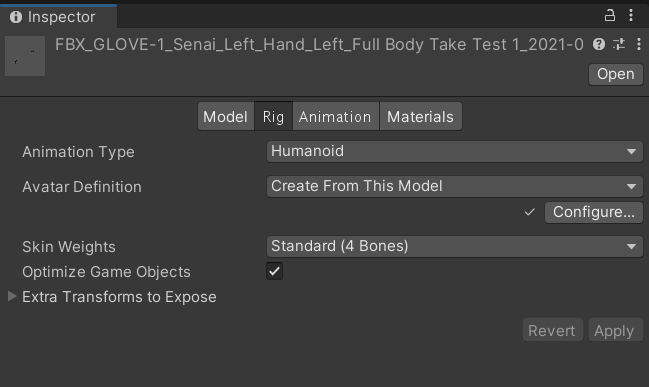
Please note: If you want to edit the animation length, firstly select the imported FBX file, go to the inspector panel and select animation (see image below). From here you can crop the animation using the slide bars or by setting the frame start and stop values. Note unlike the other platforms you cannot extend the animation this way (i.e. add extra keys), you can can only remove keys.

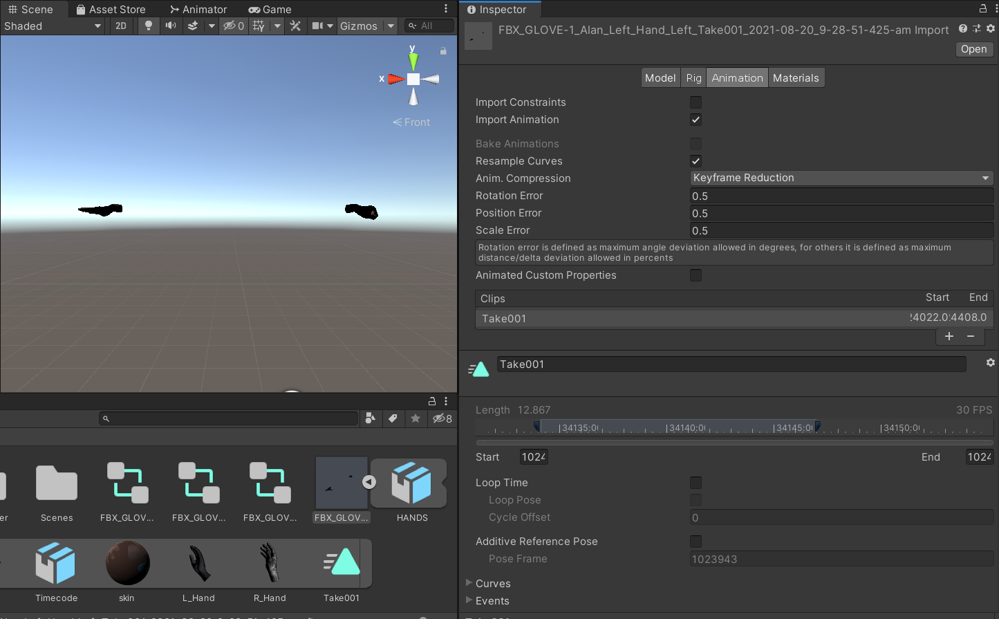
- The bones of the skeleton are auto-populated. For the hands you will need to manually update the bones because the Unity hand rig doesn't have metacarpal bones. See below images for the correct mapping of joints for the body and the left hand. Make sure to also update the Right hand bones.
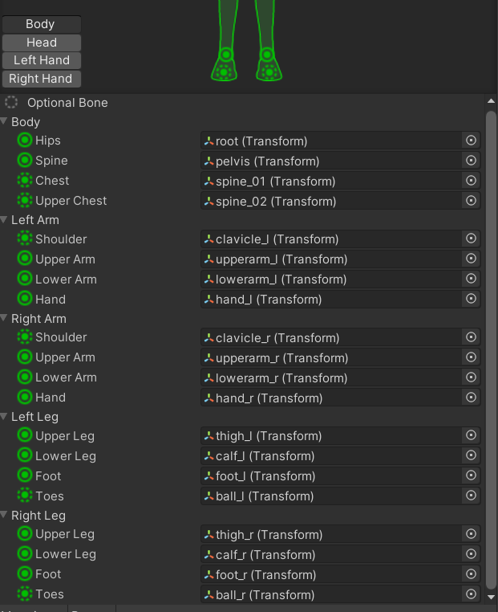
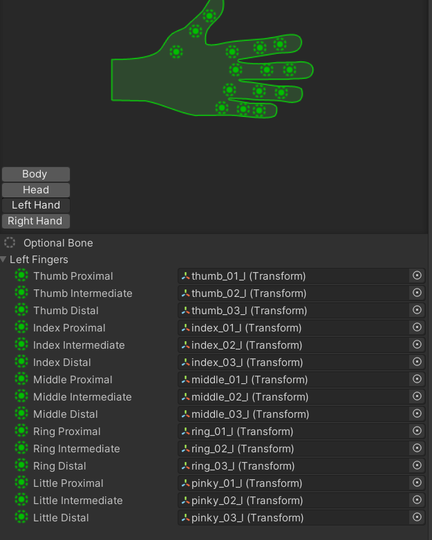


Blending Animation Layers
- Create an Animator controller on your target character or create a new one. It will have a base layer
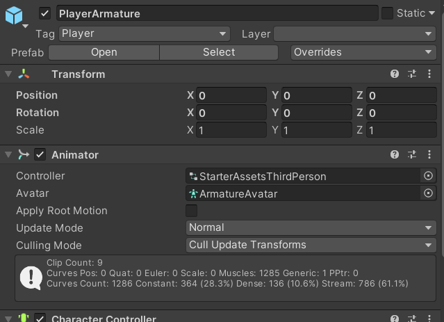

The PlayerArmature prefab has a default Base Animation Layer below.

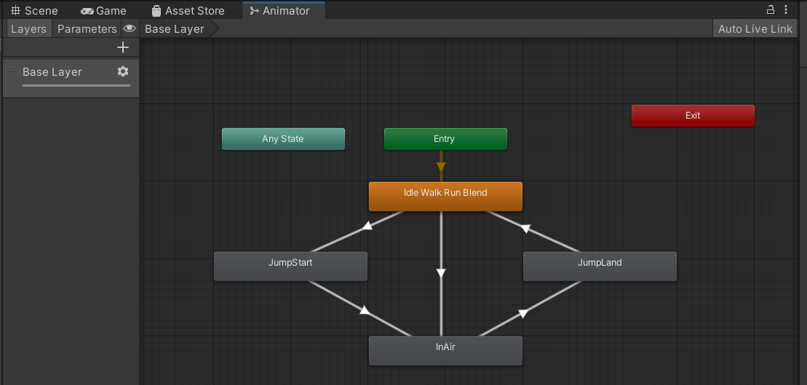
- Create a new animation layer for the hand. You can call it “Hand Layer”. Right click and add a new empty state then add the animation recorded in Hand Engine to this new state.
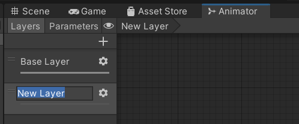
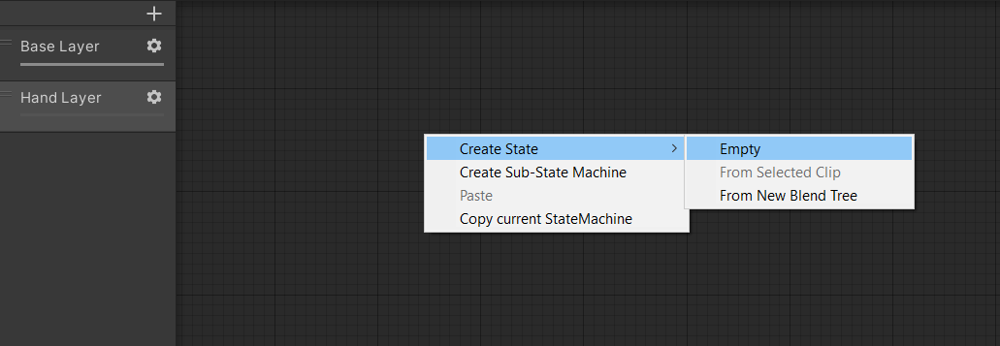
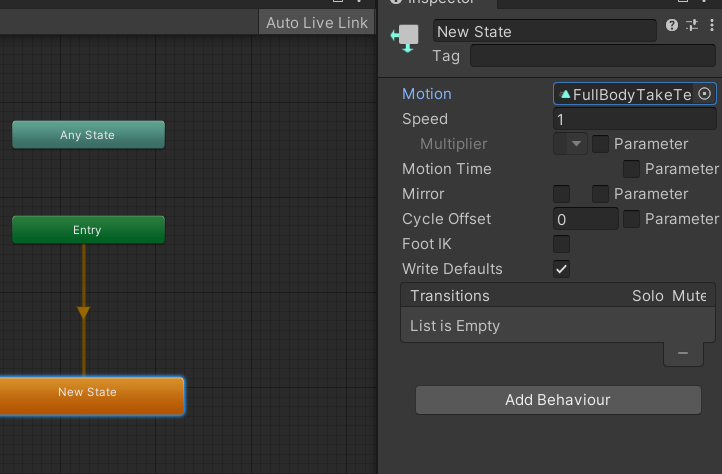
- Right Click in the Project Window and Create an Avatar Mask. You can call it “Hand Mask”. Set only the hands to be active.
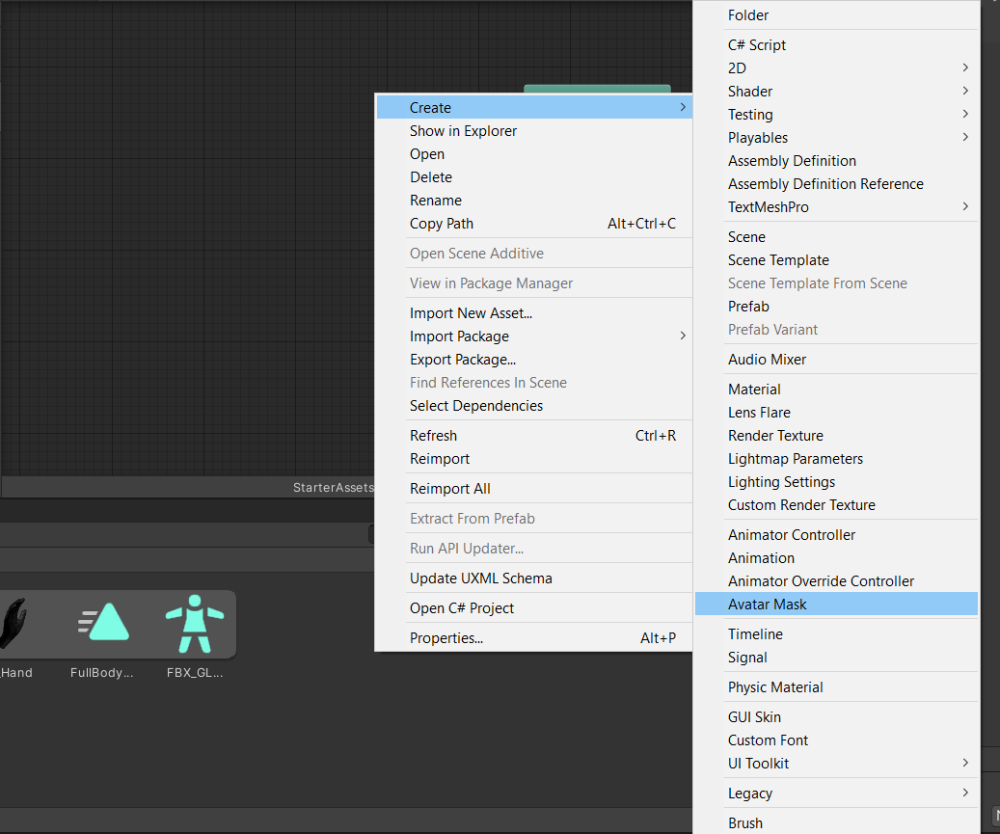

In the Inspector edit the mask from the default to only the Hands being active (green)

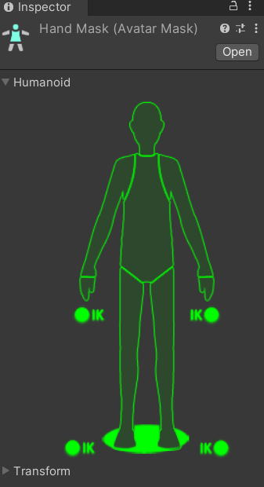
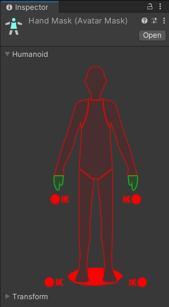

- Return to the Animator Controller. Within settings for Hand Layer set Hand Mask and set the Weight from 0 to 1
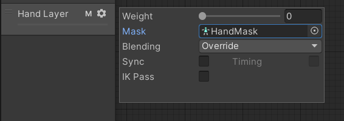
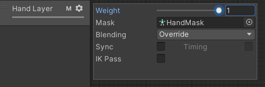


- Play scene and animation for Body and Hands should play together
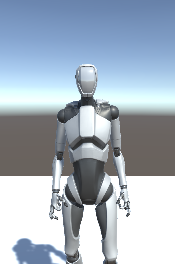